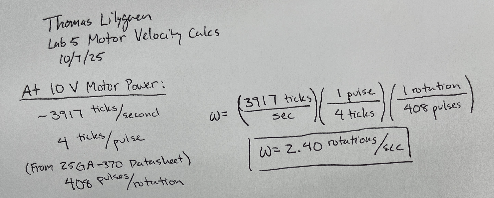
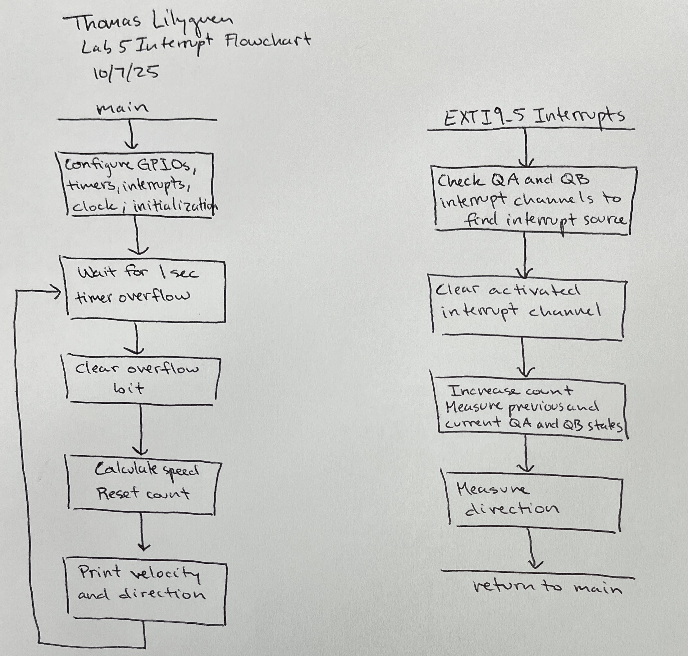
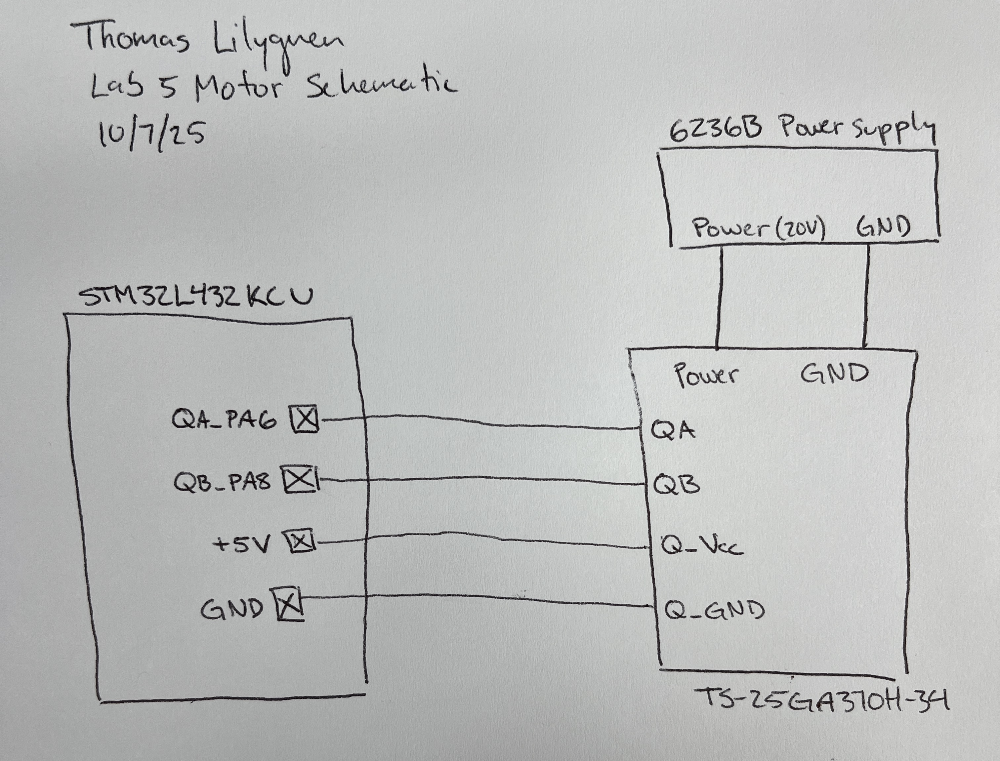
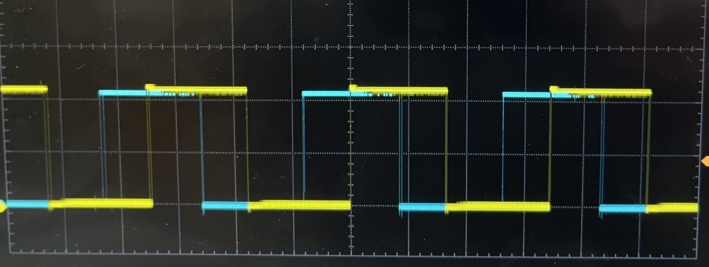
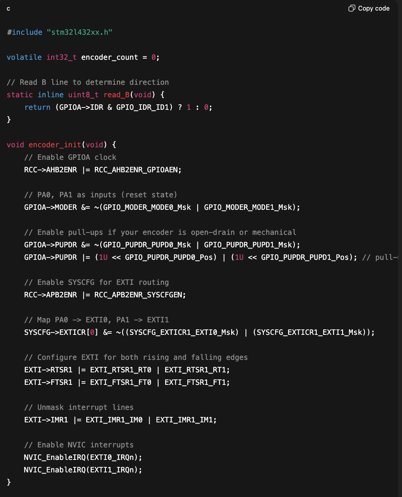
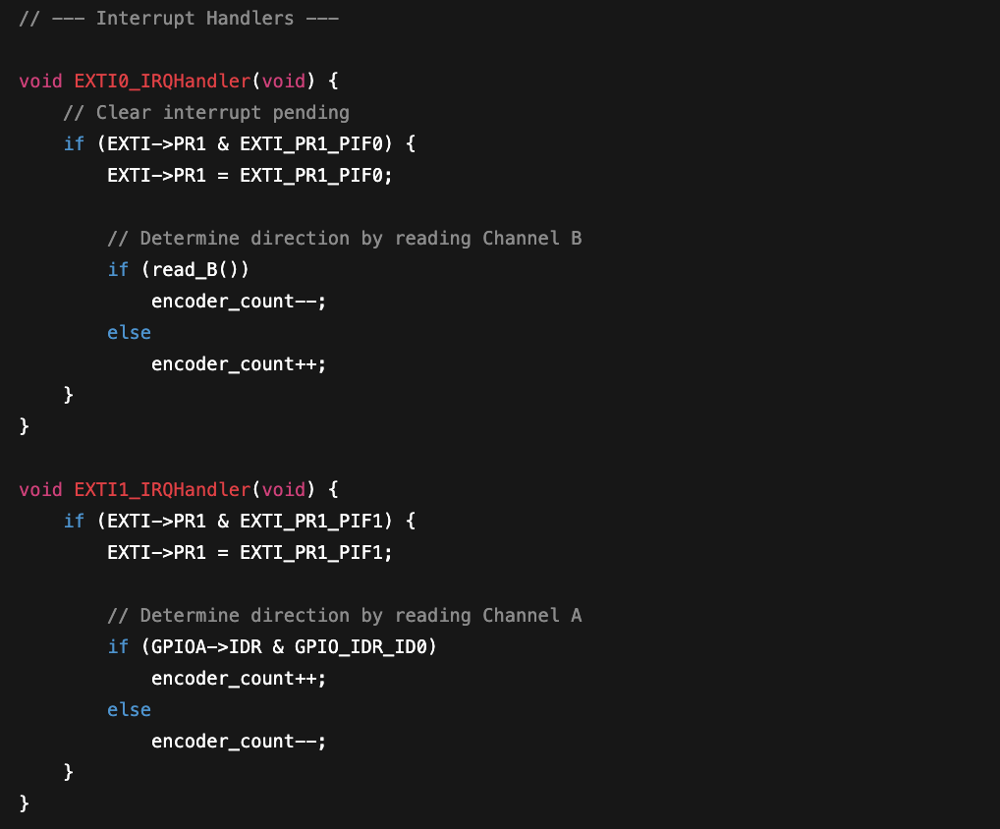

Lab 5: Interrupts
Introduction
Lab 5 aims to measure the angular velocity and detect the direction of a spinning motor using two built-in quadrature sensors generating identical square wave signals offset by 90º. The STM32L432KCU MCU records the number of pulses input by the quadratures by generating interrupt signals that increase a counter variable without the MCU needing to constantly scan for these events. After each second, the counter tally is converted to angular velocity using dimensional analysis with specifications from the motor’s datasheet before being reset. By keeping track of the rising and falling edges for both quadratures, the motor’s direction can also be determined.
Design and Testing
The 25GA-370 DC Motor contains an encoder disk and two optical quadrature sensors, QA and QB. Both quadratures sensors generate identical square wave pulse trains, but the signal from QB is offset from the QA signal by 90 degrees. The signals from these sensors feed into the PA6 and PA8 pins on the MCU for QA and QB, respectively. The rising and falling edges for each signal generate and interrupts
Calculations
The interrupt configuration increments the counter by one at each rising and falling edge trigger for both quadrature pulses. The total count acheived after one second must be converted to angular velocity in revolutions per second. These interrupt signals increment the counter by four for each measured pulse, meaning a correcting factor of four must be applied to convert the variable from ticks to pulses. According to the motor’s datasheet, the motor has 408 pulses per revolution, which can then be used to get the desired velocity. Accuracy can be confirmed by checking the measured specs within the same datasheet.

Technical Documentation
Interrupt Flowchart
The MCU continuosly operates in the while loop within the main function after configuring the GPIOs, the interrupts, and one-second timer. Within the while loop, the MCU waits for the timer overflow to inidicate 1 second has passed, and when that overflow flag rises, it converts the count value to angular velocity and prints both the velocity and direction. When the rising or falling edge of a quadrature pulse is detected, the MCU pauses its operations within the main function and jumps to the interrupt handler function. There, it resets interrupt flag, increases the counter, and measures the current and previous states of both quadratures to feed into an external comparator to get the motor’s direction. Once the interrupt is properly handled, it returns back to the main function and resumes operation from where it left off.

Electric Schematic
The hardware layout for this lab was relatively simple. The motor housed six total connections: an external power supply and ground, two quadrature sensor signals, a 5V quadrature sensor voltage supply, and a quadrature sensor ground. The first two connections were connected to an external power supply capable of generating up to 20V DC. Quadrature A was fed into pin the five-volt tolerant PA6 pin and the signal from Quadrature B was fed into the five-volt tolerant PA8 pin, both on the MCU. The 5V quadrature sensor voltage supply and ground were both provided by the MCU.

Results and Discussion
The interrupt encoder proved to provide accurate velocity measurements and consistent direction determination, whether operating at very high or low motor speeds. The implementation of interrupts allow the processor within the MCU to carry out other tasks while waiting for an interrupt trigger event to appear, increasing responsiveness, accuracy, and efficiency. In this lab, high-speed resolution was obtained by increasing the counter each time the positive and negative edges of both encoders was detected. Using a traditionally polling method, the MCU would need to constantly monitor and check these flags and operate accordingly. In high-speed and high-precision systems, the polling rate may be too slow and generate incorrect or incomplete data and the CPU requires greater power to consistently circulate through this scanning process and can possibly overheat and diminish performance. Above all, the MCU can only operate as fast as the polling loop allows for, which means that the polling process is not suitable for time-sensitive control.

Conclusion
I can confidently say that Lab 5 was completed to full specifications. This lab, including the write-up process, totalled about 10 hours of productive work. The quadrature pattern identified properly determined the motor’s direction and the interrupt method allowed for high-resolution speed calculations, even at extremely high and low apparent speeds.
AI Prototype
To test ChatGPT’s capability at coding MCU interrupts for quadrature measurements, it was given the following prompt: “Write me interrupt handlers to interface with a quadrature encoder. I’m using the STM32L432KC, what pins should I connect the encoder to in order to allow it to easily trigger the interrupts?” I added a slight modification to prohibit ChatGPT from using HAL to better compare its code and mine. The code it provides can be found in Figures 4 and 5.


ChatGPT’s code appears to be solid. It uses built-in CMSIS more frequently in both the main function and interrupt handler, whereas I opted for specific bit setting for more clarity. ChatGPT opted to have the counter increase in both the positive and negative direction, depending on the direction of the motor, instead of specifically coding for “CW” and “CCW,” like I had. This came off as more elegant to me and would be something I would implement when presented with a similar problem in the future.